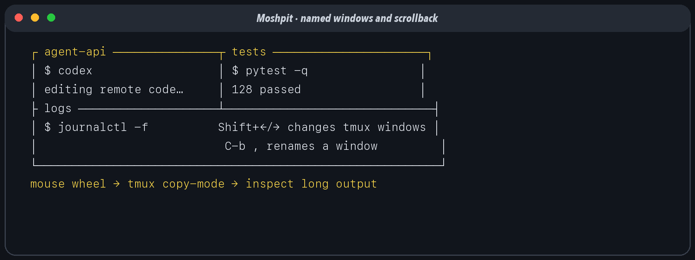

tmux is a terminal multiplexer. Its server owns sessions; a session owns windows; a window owns one or more panes. The visible terminal is merely a client attached to that server. Closing Ghostty, losing the network, or suspending the laptop detaches the client but does not end the remote programs.
That ownership model is the heart of resilient agent work. Start the agent inside remote tmux, not in the transient mosh shell around it:
tmux new -As worknew -A attaches to work if it exists or
creates it if it does not. Detach with C-b d; reattach
later with the same command.
Both repository configurations bind Shift–Left and Shift–Right without a prefix:
bind -n S-Left previous-window
bind -n S-Right next-window
set -g pane-border-status top
set -g pane-border-format "#{pane_title}"This produces a clean navigation ladder: Command–Left/Right changes
terminal tabs; Shift–Left/Right changes tmux windows inside the active
tab. Rename the current tmux window with C-b ,, type a name
such as agent-api, and press Return. The normal tmux status
line shows window names. The repository additionally places pane titles
on the top pane border. Programs can set a pane title; from a shell,
printf '\033]2;%s\033\\' 'logs' is a portable way to ask
many terminals/tmux setups to display one.

The shared base is:
set -g mouse on
setw -g mode-keys viMouse mode enables pane selection, resizing, window selection, and
scroll-wheel entry into copy-mode. Vi mode makes v begin a
selection and y perform the configured copy action after
C-b [ enters copy-mode.
The repository keeps two useful behaviors. “Copy and jump” uses
copy-selection-and-cancel: the bytes are copied, copy-mode
ends, and the viewport returns to live output. “Copy and stay” uses
copy-pipe-no-clear: the bytes are copied through
copy-command, but the highlight and scroll position remain.
The Mac configuration chooses stay:
bind -T copy-mode-vi MouseDragEnd1Pane send -X copy-pipe-no-clear
bind -T copy-mode-vi DoubleClick1Pane send -X select-word \; send -X copy-pipe-no-clear
bind -T copy-mode-vi TripleClick1Pane send -X select-line \; send -X copy-pipe-no-clear
bind -T root DoubleClick1Pane select-pane \; copy-mode -M \; send -X select-word \; send -X copy-pipe-no-clear
bind -T root TripleClick1Pane select-pane \; copy-mode -M \; send -X select-line \; send -X copy-pipe-no-clearThe extra bindings cover two states. The copy-mode-vi
table handles clicks after scrolling has already entered copy-mode. The
root table handles a double- or triple-click made directly
from the live pane: it selects the pane, enters copy-mode at the mouse
position, selects the word or line, and copies without clearing. A drag
is already routed through copy-mode by tmux mouse handling, so its
copy-mode binding is sufficient.
This matters when moving several fragments from a large output or
input block in one box to an editor or agent in another. With
copy-selection-and-cancel, the first mouse release copies
to the tmux buffer and clipboard, immediately cancels copy-mode, removes
the highlight, and jumps the viewport back to the live input point. The
next fragment then requires finding the old block again.
copy-pipe-no-clear still copies immediately—through local
pbcopy or remote ssh mac pbcopy—but leaves the
selection highlighted exactly where it is. You can copy another word,
line, or region from the same block, paste each fragment into the other
box, and press q or Escape only when the transfer is
finished.
For jump-on-copy, replace the last action with
copy-selection-and-cancel. It is convenient for a single
extraction when returning immediately to the prompt is desirable; the
no-clear family is the deliberate choice for repeated transfers from
long blocks.
On the Mac, tmux pipes copied bytes directly to the system clipboard:
set -g copy-command 'pbcopy'On Linux, the reliable route calls back to the Mac:
set -g copy-command 'ssh mac pbcopy'The alias mac is defined in remote
~/.ssh/config. Tailscale makes it reachable; SSH makes
delivery reliable; pbcopy performs the final macOS
clipboard write.